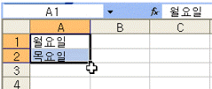
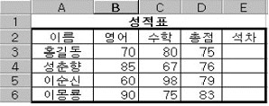
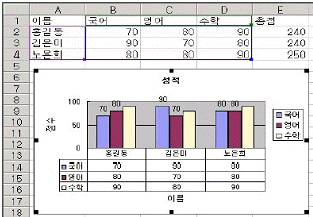
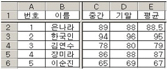
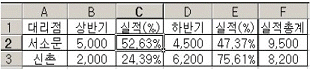

컴퓨터활용능력-3급(폐지) (2007-02-11 기출문제)
1과목: 컴퓨터 일반
1. 다음 중 한글 Windows XP의 [탐색기] 기능에 대한 설명으로 가장 옳지 않은 것은?
- 각 드라이브의 사용공간과 여유공간을 알 수 있다.
- 파일이나 폴더의 생성날짜, 바뀐 날짜 등의 파일 정보를 바꿀 수 있다.
- 네트워크 내의 다른 사용자가 내 컴퓨터의 파일이나 폴더를 읽고, 쓰게 할 수 있다.
- 현재 설치되어 있는 응용 프로그램을 실행할 수 있다.
(정답률: 57%)

2. 한글 Windows XP에서 바탕화면에 여러 화면이 펼쳐져 있을 때 그 중에서 활성화된 창만 캡쳐(Capture) 하려고 한다. 바로가기 키로 옳은 것은?
- [Ctrl]+[C]
- [Alt]+[Prt Scr]
- [Shift]+[Prt Scr]
- [Ctrl]+[Prt Scr]
(정답률: 81%)
3. 다음 중 한글 Windows XP의 시스템 최적화에 대한 설명으로 옳지 않은 것은?
- 디스크 조각 모음 : 디스크에 대한 접근 속도를 향상시키기 위한 것으로 디스크의 용량 증가와는 관계가 없다.
- 드라이브 변환기 : 드라이브가 압축되어 있을 경우에만 드라이브 변환을 수행할 수 있다.
- 디스크 정리 : 디스크의 여유 공간을 확보하기 위해 디스크 드라이브를 검색하여 필요 없는 파일을 삭제하는 기능이다.
- 백업(Backup) : 원본 데이터의 손실에 대비하여 중요한 데이터를 저장하는 기능이다.
(정답률: 66%)
4. 다음 중 URL에 나타나는 정보와 가장 거리가 먼 것은?
- 프로토콜 이름
- 도메인 이름
- 통신망의 종류
- 소속 기관의 종류
(정답률: 60%)
5. 다음 중 시스템 및 정보의 보안을 위해 기본적으로 충족해야 하는 요건과 관련이 없는 것은?
- 가로막기(Interruption)
- 기밀성(Confidentiality)
- 인증(Authentication)
- 부인방지(Non Requdiation)
(정답률: 73%)
6. 원격지에 있는 다른 시스템과의 원활한 통신이 가능하도록 상로 간에 준수해야 하는 통신 규범을 무엇이라고 하는가?
- 인터페이스
- 데이터 통신
- 프로그램
- 프로토콜
(정답률: 85%)
7. 다음 중 인터넷에 대한 설명으로 옳지 않은 것은?
- 다양한 정보를 분산, 공유하는 정보의 바다이다.
- TCP/IP 프로토콜을 기반으로 하는 개방형 구조이다.
- 인터넷 상에서 동일한 IP 주소를 갖는 컴퓨터가 많이 존재한다.
- 숫자로 이루어진 IP 주소와 문자로 이루어진 도메인 네임을 사용한다.
(정답률: 83%)
8. 다음의 디지털 컴퓨터에 대한 설명 중 가장 옳지 않은 것은?
- 랩톱, PDA등의 휴대용 컴퓨터가 있다.
- 하드웨어와 소프트웨어로 이루어져 있다.
- 아날로그 컴퓨터에 비하여 연산속도가 빠르고, 특수목적용으로 많이 사용된다.
- 컴퓨터 내부에서 산술연산, 논리연산 등을 수행하며, 이산데이터를 사용한다.
(정답률: 71%)
9. 한글 Windows XP에서 탐색기의 [보기]-[이동]에서 제공되지 않는 기능은?
- 뒤로
- 앞으로
- 한 수준 위로
- 한 수준 아래로
(정답률: 74%)
10. 한글 Windows XP에서 바로가기 키와 그 기능을 연결한 것 중 옳지 않은 것은?
- [Ctrl+C] - 복사
- [Ctrl+V] - 붙여넣기
- [Ctrl+X] - 잘라내기
- [Ctrl+F] - 실행취소
(정답률: 92%)
11. 다음 중 응용 소프트웨어의 종류로 옳지 않은 것은?
- Windows XP
- Excal
- CAD 프로그램
- 통계 프로그램
(정답률: 66%)
12. 다음 중 컴퓨터의 기억용량 단위를 작은 것에서 큰 순서로 바르게 나열된 것은?
- KB - MB - GB - TB - PB
- KB - MB - TB - PB - GB
- KB - PB - GB - TB - MB
- PB - KB - MB - GB - TB
(정답률: 89%)
13. 다음 중 연산처리 능력에 따라 분류한 컴퓨터의 종류에 속하는 것은?
- 서버컴퓨터
- 디지털컴퓨터
- 노트북컴퓨터
- 마이크로컴퓨터
(정답률: 60%)
14. PC 주변장치 연결을 위한 방식으로 인텔, 마이크로소프트, 컴팩 등이 플러그 앤 프레이 (P&P) 개념을 발전시키기 위해 합의한 포트 규격으로 마우스, 키보드, 프린터, 스피커, 모뎀, 조이스틱 등의 장치를 최대 127개까지 직렬로 연결하여 사용할 수 있으며 시리얼 포트보다 속도가 10배 가까이 향상된 방식은?
- PS/2 포트
- 직병렬 포트(Serial Paralled Port)
- 병렬 포트(Parallel Port)
- USB(Universal Serial Bus) 포트
(정답률: 77%)
15. 다음 중 한글 Windows XP에 대한 설명으로 옳은 것은?
- 왼손잡이를 위해 마우스의 단추를 변경할 수 있다.
- [제어판]-[프린터 및 팩스]에서 기본 프린터를 지정할 수 있으나, 삭제할 수는 없다.
- 마우스의 두 번 누르기 속도를 느리게 하거나 빠르게 조절할 수 없게 되어있다.
- 마우스를 사용할 수 없게 되었을 때 키보드로 마우스를 대신 사용할 수 없게 되어있다.
(정답률: 67%)
16. 한글 Windows XP의 [시작] 단추를 클릭하면 나타나는 시작 메뉴에 포함되지 않는 메뉴는?
- 모든 프로그램
- 내 문서
- 실행
- 시스템 시작
(정답률: 74%)
17. 컴퓨터의 중앙처리 장치 중 입력된 데이터를 명령에 따라 산술 및 논리연산을 수행하는 장치는?
- CU(Control Unit)
- IR (Instruction Register)
- ALU(Arithmetic Logical Unit)
- PC (Program Counter)
(정답률: 77%)
18. 다음 중 운영체제의 역할로 옳지 않은 것은?
- 처리기 관리
- 기억장치 관리
- 입출력장치 관리
- 응용 프로그램 유지보수
(정답률: 65%)
19. 다음 중 인터넷 사이트를 방문했을 때 사용자 기본 설정 등의 정보를 사용자 컴퓨터에 저장할 수 있도록 해당 사이트에서 만든 파일을 일컫는 용어는?
- 쿠키(Cookie)
- 프록시(Proxy)
- 캐싱(Caching)
- URL
(정답률: 82%)
20. 다음 중 컴퓨터의 하드웨어를 구성하는 입력장치로 옳지 않은 것은?
- 마우스(mouse)
- 스캐너(scanner)
- 마이크(microphone)
- 모뎀(modem)
(정답률: 78%)
2과목: 스프레드시트 일반
21. 다음 중 데이터입력에 대한 설명으로 옳지 않은 것은?
- 날짜 표시는 [Ctrl]+[;]를 누른다.
- 시간 표시는 [Ctrl]+[Alt]+[;]를 누른다.
- 셀 서식을 “yyyy-mm-dd"로 지정한 후 ”1“을 입력하면 ”1900-01-01“이 표시된다.
- 셀 서식을 “hh:mm"으로 지정한 후 ”1.5“를 입력하면 ”12:00“이 표시된다.
(정답률: 69%)
22. 마우스를 이용하여 열의 너비를 선택한 열에 맞도록 자동 조정하는 방법에 대한 설명으로 옳은 것은?
- 선택한 열의 열 머리글 우측을 마우스 왼쪽 버튼으로 한번 클릭한다.
- 선택한 열의 열 머리글 우측을 마우스 왼쪽 버튼으로 더블 클릭한다.
- 선택한 열의 마우스 오른쪽 버튼으로 클릭하여 팝업 메뉴에서 선택한다.
- 마우스로는 열의 너비를 자동 조정할 수 없다.
(정답률: 64%)
23. 셀에 입력하는 모든 숫자를 자동으로 1000단위 숫자로 바꾸어 입력(숫자 1을 입력하면 1000으로 바뀌어 입력) 되도록 하고 싶다. 메뉴의 [도구]-[옵션]을 선택하여 나타나는 옵션 대화상자에서 어떻게 설정하여야 하는가?
- [편집] 탭을 선택한 다음 고정 소수점을 클릭해 체크 표시 후 소수점 위치에 -3을 입력 합니다.
- [편집] 탭을 선택한 다음 고정 소수점을 클릭해 체크 표시 후 소수점 위치에 3을 입력 합니다.
- [계산] 탭을 선택한 다음 고정 소수점을 클릭해 체크 표시 후 소수점 위치에 -3을 입력합니다.
- [계산] 탭을 선택한 다음 고정 소수점을 클릭해 체크 표시 후 소수점 위치에 3을 입력 합니다.
(정답률: 56%)
24. 엑셀에서 열 수 있는 파일 형식을 설명한 것으로 옳은 것은?
- .prn : 탭으로 분리된 텍스트 문서
- .txt : 공백으로 분리된 텍스트 문서
- .csv : 쉼표로 분리된 텍스트 문서
- .xlw : 특정한 서식이 적용된 서식 파일
(정답률: 55%)
25. 다음과 같이 함수를 정의하여 실행하였을 때 나타나는 결과로 옳지 않은 것은?
- =LEFT("대한민국“,2) , 결과 : 대한
- =SQRT(4) , 결과 : 16
- =MID("아름다운 강산“,3,2) , 결과 : 다운
- =ROUND(2.15,1) , 결과 : 2.2
(정답률: 62%)
26. 다음 시트에서 채우기 핸들을 끌었을 때 A3 셀에 입력되는 값으로 올바른 것은?

- 화요일
- 수요일
- 토요일
- 일요일
(정답률: 83%)
27. 다음 중에서 계산식 “=2*2+10/5-3”과 같은 결과 값이 나타나는 수식은?
- =2*(2+10)/5-3
- =2*2+10/(5-3)
- =2*2+(10/5-3)
- =2*(2+10/5)-3
(정답률: 59%)
28. 다음 중 [E3] 셀에 총점에 대해 내림차순으로 석차를 구한 후, [E4:E6] 영역까지 채우기 핸들을 이용하여 석차를 구하기 위한 [E3] 셀의 수식으로 옳은 것은?

- =RANK($D$3, $D3:$D6)
- =RANK(D3)
- =RANK(D3, $D$3:$D$6)
- =RANK($D$3:$D$6,D3,1)
(정답률: 78%)
29. 아래 그림과 같이 작성된 워크시트에서 [E1:E4] 영역을 선택한 상태에서 [Ctrl]+[C]키를 누른 후, 차트영역을 선택한 다음 [Ctrl]+[V]키를 눌렀을 때의 실행결과에 대한 설명으로 옳은 것은?

- 해당 범위가 범례로 추가된다.
- 데이터 계열로 추가된다.
- 데이터 테이블은 변화가 없다.
- 차트의 크기가 자동으로 조절된다.
(정답률: 62%)
30. [파일]-[페이지설정]-[시트]에서 설정할 수 없는 것은?
- 매 페이지 인쇄시 “반복할 행”이나 “반복할 열”을 지정 할 수 있다.
- 인쇄할 영역을 지정할 수 있다.
- 용지의 방향을 지정할 수 있다.
- 인쇄할 페이지의 순서를 “행우선”이나 “열우선”으로 지정할 수 있다.
(정답률: 63%)
31. 다음과 같이 워크시트의 창을 나누기 위해서는 셀 포인터기 어디에 있어야 하는가?

- C2
- B2
- C1
- B1
(정답률: 72%)
32. 다음 그림과 같은 자료에서 “C2”셀의 수식을 복사하여 “E2", "C3", "E3"셀에 붙여넣기 하려 한다. 셀 ”C2"에 입력해야 할 수식으로 옳은 것은? (단, "C2:C3", "E2:E3"의 셀 서식은 백분율이다.)

- =B2/F2
- =B2/$F$2
- =B2/$F2
- =B2/F$2
(정답률: 47%)
33. 다음 중 [셀 서식]-[맞춤] 탭의 [텍스트 조정]에 관한 설명으로 옳지 않은 것은?
- 텍스트 줄 바꿈은 셀의 내용이 한 줄로 표시되지 않을 때 여러 줄로 나누어 표시되며 셀의 내용과 열 너비에 따라 표시되는 줄 수가 결정된다.
- 셀 병합을 해제하면 원래 상태의 셀이 나타난다.
- 선택한 여러 셀을 하나의 셀로 병합하면 선택한 범위의 모든 데이터가 전부 표시된다.
- 셀에 맞춤은 셀의 글꼴의 크기가 변경되는 것은 아니며 열 너비를 바꾸면 글자의 크기가 자동으로 조절된다.
(정답률: 53%)
34. 차트 마법사 3 단계에서 설정해야 하는 것으로 옳은 것은?
- 데이터 계열의 이름
- 차트 및 축의 제목
- 추세선의 표시 여부
- 차트의 행/열 작성 방향
(정답률: 64%)
35. 엑셀에서 출력물의 각 페이지 하단에 문서 작성자의 이름을 넣으려고 할 때 지정해야 하는 것은?
- 머리글
- 바닥글
- 윗주 달기
- 메모
(정답률: 77%)
36. 어떤 반 학생들의 학점을 부여하기 위해 데이터를 정렬하고자 한다. 총점이 높은 학생에서 낮은 학생 순으로 정렬하고, 총점이 같을 경우에는 결석일수가 낮은 학생에서 높은 학생 순으로 정렬하고, 총점과 결석일수가 같은 경우에는 평소점수가 높은 학생에서 낮은 학생 순으로 정렬하고 싶다. 다음 중 정렬기준과 정렬방식이 옳게 연결된 것은?
- 총점 내림차순, 결석일수-오름차순, 평소점수-내림차순
- 총점 오름차순, 결석일수-내림차순, 평소점수-오름차순
- 총점 내림차순, 결석일수-오름차순, 평소점수-오름차순
- 총점 오름차순, 결석일수-내림차순, 평소점수-내림차순
(정답률: 70%)
37. 다음 중 셀 서식의 표시 형식 기호가 “#,##0.0"로 설정된 셀에 1123.789를 입력한 표시 결과는?
- 1123.8
- 1,124
- 1124
- 1,123.8
(정답률: 73%)
38. 다음 중 조건부 서식에 대한 설명으로 옳지 않은 것은?
- 데이터가 변경되면 조건을 다시 검사하여 서식을 수동으로 변경해야 한다.
- 조건은 3개까지 지정할 수 있다.
- 선택한 영역에 대해서 사용자가 지정한 조건을 만족하는 셀에만 특정 서식을 적용한다.
- 조건을 여러 개 지정할 경우, 먼저 지정된 조건이 우선되어 적용된다.
(정답률: 58%)
39. 엑셀에서 차트를 선택한 후, 오른쪽 마우스를 클릭하면 나타나는 [차트영역 서식]에서 작업할 수 없는 것은?
- 차트의 테두리 설정
- 차트 제목의 글꼴과 크기 변경
- 범례 설정 및 해제
- 차트의 영역에 색 설정
(정답률: 65%)
40. 다음 중 [파일]-[인쇄 미리 보기]의 [설정] 대화상자에서 설정할 수 없는 것은?
- 여백
- 축소/확대 배율
- 페이지 나누기 보기
- 용지 방향
(정답률: 49%)